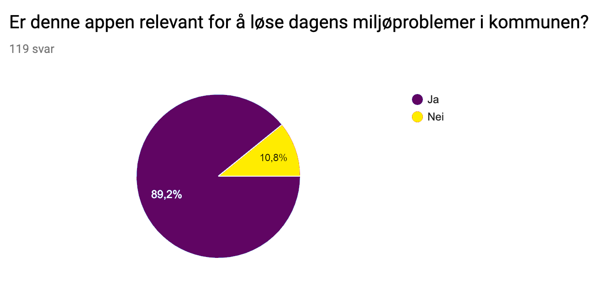

Problemet
Har du noen gang lurt på hvordan du kan påvirke verden? Tenk deg at du har en mulighet til en direkte positiv innflytelse på et lokalt samfunn ved å gjøre små, men bemerkelsesverdige aktiviteter i en ukentlig basis. For øyeblikket er det stadig flere mennesker som har vært oppmerksom på hva de negative trendene av forsøpling har betydd for denne planeten, både lokalt og globalt. Klimaforandringr har blitt en av de største miljøutfordringene i vår generasjon.
Det kan være vanskelig å vite hvordan man kan bidra til den miljøvennlige bevegelsen. Det finnes et utall forskjellige miljøvennlige handlinger som kan implementeres i en viss persons daglige rutine. Hvor begynner man? Er det en måte å gjøre det lettere og morsomt for lokalsamfunnet å delta i resirkulering av hensyn til miljøet vårt?
Målgruppe:
Vi ønsker å målrette hvert eneste individ til å aktivt engasjere seg i resirkulering av søppel i deres lokalsamfunn. Vi vil at alle skal ha lysten til å bidra med å være engasjert i dette, fra personer som ser søppel liggende på bakken til de som bare kaster søppelet sitt som en daglig rutine. Vi ønsker først og fremst at løsningen vår skal gi mennesker et formål eller en ide til et positivt system som belønner dem for å ta vare på lokalsamfunnene deres.
Hvor møter vi problemene?
Mange av oss har en tendens til å bli passive når det gjelder denne typen problemer fordi vi ikke føler at bidragene våre betyr noe. Dette kan føre til spredning av ansvar, slik at vi tror andre mennesker vil gjøre jobben.
Teknologiske eller sosiale problemer:
Problemet vårt er synlig på medier over hele verden. Det er et velkjent faktum at klimaendringer er en reell og presserende trussel. Problemet er hvordan vi som enkeltindivider kan bidra til å bidra til et miljøvennligere miljø. Man må ofte søke gjennom flere artikler og bruke mye tid på å prøve å finne informasjon om dette problemet. Denne tidkrevende prosessen ender med å bli demotiverende og uinteressant.
Hvorfor er problemet relevant?
“Klimaendringer er den største trusselen mot utviklingen”, ifølge FN. Siden folk har forskjellige nivåkompetanser, er det viktig for oss at appen vår er rettet mot alle. Vi har mennesker som har kunnskap om resirkulering, men mangler motivasjon til å gjøre oppgaven. Så er det de som ikke har den kunnskapen. Vi har også mennesker som ærlig talt ikke bryr seg om miljøet. Denne applikasjonen trengs for at dette skal bli en felles plattform for alle i våre lokalsamfunn.
“Great things are done by a series of small things brought together” - Vincent Van Gogh

Ifølge undersøkelsen viser det at de fleste unge mennesker generelt er opptatt av det nåværende verdensmiljøet. De ønsker flere innovative løsninger for å redusere miljøproblemene i både lokalsamfunnene og verden ytterligere.